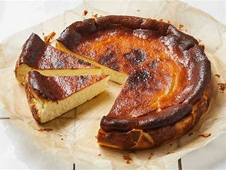
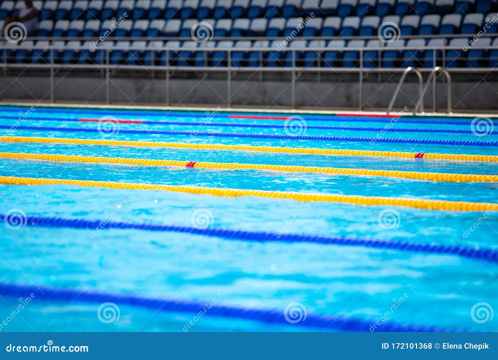

My Hobbies
Baking

Baking is one of my favorite hobbies because I get to experiment with different flavors, and try extraordinary combinations, to get a unique and delicious dish that I have never tried before. Like when I made a burnt basque cheese cake with lemons and drizzled nutella on top.
Coding
Coding is also one of my best activities since I can create beautiful and creative websites like this one. I have been learning this essential skill for 8 weeks, and I hope I can master it someday.
Swimming

I have always loved swimming whether it was at the beach or at a swimming pool. My father first taught me when I was 12 and I have been improving ever since. Although this sport is crucial to know, I can not practice it often since it gets cold in the winter.